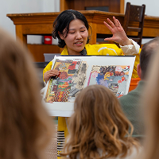
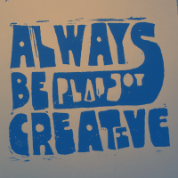
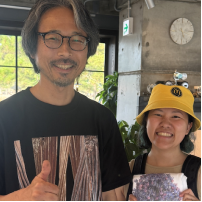

Create holistic designs
- Service design
- UX design
- Front-end and agentic coding
Hire me if you're looking for a designer who can launch digital and in-person experiences, lead people, and understands that a good product requires collaboration, systems thinking, and intentional AI use.
I've spent 15+ years in tech across games, government, non-profits, fintech, and regulated enterprise environments.
What you'll get is a generalist who can jump into a project at any stage to:
I grew up reading fantasy books, blogging, and coding websites on Calgary Planet. After burnout and concussion recovery forced me off screens, I focused on making a positive impact while enjoying hobbies like indoor bouldering, traveling, playing indie games, and watching media with compelling stories. Community highlights:



Accept unknowns early, make a call with the best data available, and move forward one step at a time.
Observe real user behavior in the wild, verify assumptions with data, and respect regional differences.
Run small tests by balancing a structured design process with the reality of scrappy validation.
Seek root causes with data and questions. Move quickly, choose deliberately, and measure real outcomes.
Pair candor over comfort with clear 1:1 growth plans, and ask questions to help protect team health and safety.
Share messy work. Label feedback clearly (FYI, suggestion, recommendation, plea), and recognize every decision is a trade-off.
"Carrie [is] one of the most reliable and respected members of the team. Carrie's leadership shows her ability to guide the team and cross-functional alignment with maturity and empathy."
"Carrie excels as a mentor, guiding junior designers with both technical advice and support, helping them grow professionally. Her combination of creativity, leadership, and organizational skills makes her an asset to any team."
"Carrie does an awesome job at creating an inclusive environment, ideating new initiatives to evolve our practice, and giving kudos/appreciation to others. She's definitely that person on the team that makes everyone feel valued, heard, and included."
"Carrie is an amazing and inspiring leader in design. Carrie's ability to see the whole project from concept to completion and the way she responded to competing needs turned the project into a stress-free collaborative process."
"Carrie is an amazing teacher. Carrie's enthusiasm, smile, and humor was super motivating. She made projects very fun to work on, and it never felt like a burden."
"I got to know Carrie as a super transparent, insightful, and empathetic mentor. She listens carefully to my needs before she unreservedly provides actionable, insightful feedback and advice. I walk away from our session with clarity on goals and plans."